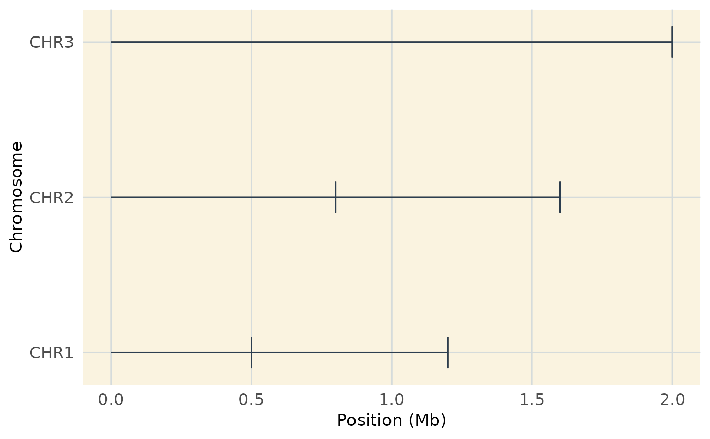

Generates a genome-wide coverage plot, displaying the positions
of markers across chromosomes. It is a customized version of plot_cover
from MapRtools and allows additional aesthetic modifications.
Arguments
- map
A data frame with two columns:
"chrom": Chromosome identifier (e.g.,"CHR1", "CHR2", ...")."position": The genomic position of markers (in base pairs).
- limits
(Optional) A data frame specifying the maximum position for each chromosome. If
NULL(default), the function computes chromosome limits frommap.- customize
Logical. If
TRUE, applies additional visual customizations. Default isTRUE.
Details
Converts genomic positions from base pairs to megabases (Mb).
If
limitsare not provided, the function calculates the maximum position for each chromosome frommap.Orders chromosomes and positions correctly for visualization.
Uses
geom_segment()to generate a chromosome-wide coverage plot.When
customize = TRUE, applies a minimalistic theme for enhanced visualization.
Examples
# Example dataset
map_data <- data.frame(
chrom = c("CHR1", "CHR1", "CHR2", "CHR2", "CHR3"),
position = c(500000, 1200000, 800000, 1600000, 2000000)
)
# Basic coverage plot
plot_cover(map_data)

# Coverage plot with custom aesthetics
plot_cover(map_data, customize = TRUE)